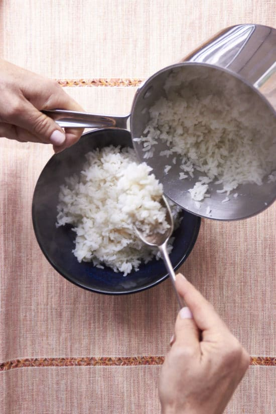

Rice Recipe

Description:
How to cook perfect rice on the stove a fool proof recipe for cooking white rice.
Ingredients:
- Water. 2 cups water
- Salt. ½ teaspoon salt
- Butter/Oil 1 tablespoon butter or oil optional
- Rice. 1 cup long grain white rice
Steps:
- Boil the water: Bring the water to boil in a medium saucepan. Add the salt and butter and
allow the butter to melt.
- Add the rice: When the water has returned to a boil, stir in the rice. Let the water return
to a light simmer. Stir again, cover the pot and turn the heat down to low. Keep the rice simmering
slightly, and keep the pot covered (you may have to peek after a few minutes to make sure the heat is at the
correct temperature, but then let it cook, covered). Start checking to see if the rice is tender and all of
the liquid is absorbed at about 17 minutes. It may take up to 25, especially if you are making a larger
quantity of rice.
- Lower stove heat: When the rice is cooked, turn off the heat and let it sit for another
couple of minutes to finish absorbing any liquid. Take off the lid, fluff the rice with a fork and let it
sit for another 2 minutes or so, so that some of the excess moisture in the rice dries off.